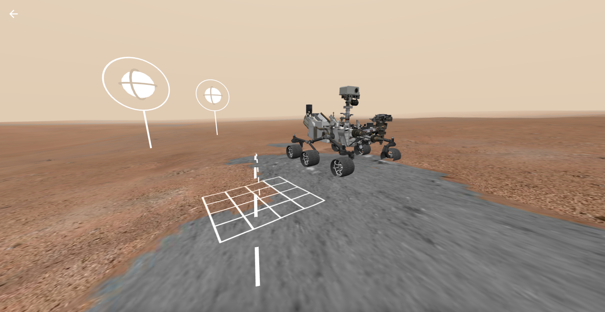
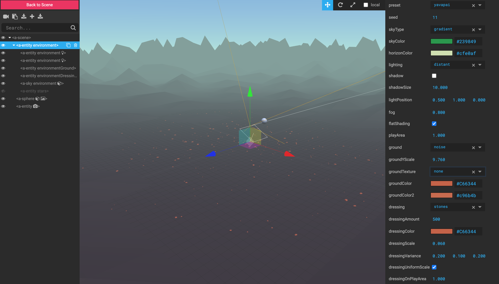

CMD-HT | HCI Technologies - Labweken
Twee weken lang heb ik in teamverband aan een project gewerkt in de Maakhaven in Den Haag. Ik laat hieronder per dag zien wat ik gedaan heb. Hierbij heb ik foto's en video's gemaakt ter verduidelijking.
Dag1
Het begin van alles. De labweken zijn begonnen. De allereerste dag gaf de labweken en maakhaven een bijzonder indruk op mij. Het was zeer spannend.
Aangekomen op de locatie kregen we een gezamelijk opening. De groepen werden bekend gemaakt, uitleg over hoe de labweken verlopen en wat toelichtingen over de opdracht.
Allereerst moesten de groepen naar de toegewezen plekken en elkaar introduceren. Na de kenninsmaking kregen wij de opdracht om een fysiek logo + een naam te verzinnen.
Mijn groep kwam met Dreamyz en tijdens het knutselen van de logo zijn wij op een soort van lamp uitgekomen. Het achterliggende idee is dat wij tijdens de kennismaking
ieder van ons van slaap houdt en belangrijk vinden. Daarbij vinden wij het belangrijk om ook te kunnen dromen van bijvoorbeeld wat je droom- auto, baan, leven etc. zijn.
Ook was het best vroeg in de ochtend we waren daarom allemaal best moe. Dit gecombineerd vormt Dreamyz.
Daarna zijn we gaan bespreken hoe wij de opdracht gaan uitvoeren. Wij waren uitgekomen tussen twee keuzes het gebruik maken van Unity of Aframe. Niemand van ons had echt ervaring met Unity terwijl grotendeels wel een beetje ervaring hebben in programmeren. Dus de keuze was snel gemaakt. Voordat we daadwerklijk met Aframe aan de slag gaan, zijn wij gaan brainstormen wat wij willen laten zien, wat en hoe onze eindproduct uit komt te zien. Wij zijn op onderzoek gegaan naar wat de mogelijkheden zijn in VR/AR gebied. Nadat iedereen meer kennis heeft opgedaan, hebben we indivudieel een aantal idee bedacht die we konden maken. Uiteindelijk kwamen we op twee ideeën uit: het door de ruimte kunnen reizen en een virtueel concert. Deze twee ideeën konden we opzich in Aframe bouwen. Dus zijn wij eerst gaan leren en experimenteren hoe Aframe precies werkt. Wij hebben ook gelijk een computer setup opgezet met de VR waar wij de Aframe voorbeelden zijn gaan uitesten en een aantal spellen zijn gaan spelen in VR. We moeten ook lol kunnen hebben tijdens de labweken.
Dag2
Mijn groepsleden en ik zijn weer verder gaan leren met Aframe. Ik heb gebruik gemaakt van youtube tutorials, blogs en de voorbeelden/documentatie van Aframe. Daardoor heb ik meer een idee hoe ik in Aframe iets kan maken. We hebben weer de VR en de computer setup herbouwd, omdat de groepen die de VR brillen en computers gebruiken elke keer weer op het einde van de dag de setup afbouwen en opruimen. Uiteindelijk heb ik een sterrenhemel als een achtergrond in Aframe kunnen plaatsen zie foto hieronder. De code hebben we gebruikt als de basis idee voor het opzetten van het idee "door de ruimte kunnen reizen".
We zijn ook op het idee gekomen om alleen bij het zonnestelsel te blijven waarin je elke planeet kan bezoeken. Tijdens het bezoek kan je het planeet verkennen. Ik ben gaan experimenteren hoe een wereld gemaakt kan worden. Bij het rond zoeken naar voorbeelden ben ik een Mars experience van Nasa tegengekomen. zie afbeelding hieronder.. Dit heb ik gebruikt als inspiratie. Dus ben ik begonnen om een Mars environment te maken van scratch. Uitindelijk ben ik erachter gekomen dat je in Aframe een standaard component kan gebruiken voor de omgeving. Ik heb voor yavapai gekozen, omdat deze het meest op mars lijkt. Voor de rest van de dag hebben we op de Oculus weer gespeeld.


Dag3
Op deze heerlijke nieuwe dag ben ik begonnen met het verder uitwerken van de mars planeet. Van een groepsgenoot heb ik gehoord dat je bij Aframe gebruik kan maken van de inspector om het makkelijker te maken. Bijvoorbeeld wat de omgeving of kleuren laat veranderen. Hierdoor hoef je niet in je code editor uit te zoeken wat de syntaxen doen. Later op de dag heb ik een Mars omgeving gemaakt met een 3D geïmporteerde mars rover model. Deze heb ik via sketchfab gedownload. Sketchfab is een website waar je verschillende 3D modellen of zelfs een heel omgeving kan downloaden voor je projecten. Hier heb ik een beetje mee rond geëxperimenteerd en de mars rover heb ik bewegend gemaakt.

Ondertussen hebben we gezamelijk besproken dat we het virtueel concert niet als een los staand project willen zien. Dus gaan we het virtueel concert in één van de planeten implementeren. Deze dag verliep niet helemaal soepel, omdat de taken en wat het idee precies gaat worden nog niet helemaal helder is voor sommige groepsleden. Dus hebben we alles even goed doorgenomen. Elk groepslid moest proberen om mininaal op 1 planeet een (interactief) omgeving te maken waar de gebruikers de planeet kunnen verkennen. Verder moesten we de oculus weer opnieuw kalibreren, omdat de sensoren de bewegingen niet goed op konden pakken. Het opnieuw kalibreren duurde soms aardig lang. Dus hebben we de Oculus voor een paar dagen niet aangeraakt.
Dag4
De avond hiervoor heb ik een idee gekregen wat voor ervaring ik nog meer in de andere planeten kan toepassen. Het idee is om een ruimte te maken waar je in VR kan tekenen. Ik heb die avond nog naar voorbeelden gekeken en kwam uit op A-painter van Aframe. Dit heb ik aan mijn groepsgenoten voorgedragen en heb gelijk goedkeuring gekregen om zoiets te maken. Ik ben enthousiast begonnen, maar het was een heleboel werk om de code uit elkaar te halen en in mijn eigen planeet toe te passen. Uiteindelijk heb ik een ander voorbeeld gevonden; de vartiste toolkit. Die was makkelijker om voor mijn planeet te gebruiken. De code heb ik mee gexperimenteerd en zo vereenvoudigd dat het mogelijk is om op een bol te tekenen en deze heb ik doorgestuurd naar mijn groepsgenoot Anouk die bezig is met het zonnestelsel en de 8 planeten in elkaar te zetten. De bol kon Anouk gebruiken als een planeet zodat gebruikers zelf deze konden in kleuren.

A-painter
Vartiste-toolkit
Dag5
Ik kreeg te horen dat als gevolg van de planeet die ingekleurd kan worden er niet meer op een planeet geklikt kan worden om naar een planeet te gaan. Dus ben ik gaan helpen om dit op te lossen. Na uren gezocht te hebben naar een oplossing zijn wij tot de conclusie gekomen om het voorlopig eruit te halen, omdat het niet mogelijk is om de click event bij het inkleuren en het klikken op een planeet te combineren. Waarschijnlijk is dat zo gemaakt in de vartiste toolkit pakket waar wij niet bij kunnen. Ik ben op een gegeven moment verder gegaan met mijn mars planeet die alleen nog een bewegend mars rover heeft. Dat is natuurlijk niet zo denderend. Dus kreeg ik een idee om op mars te kunnen bouwen. Het idee kwam van Elon Musk die mensen naar mars wilt sturen en daar het leven opbouwen. Ik wilde de gebruikers zelf iets laten bouwen en de mars rover is dan de mascotte. Ik heb een vlak gemaakt waarop gebouwd kan worden. Het bouwen is wel een dingetje, dat gaat niet zomaar. Ik ben gaan zoeken naar click events wanneer er op een knop wordt gedrukt dat er dan een interactie wordt uitgevoerd.
Dag6
Vandaag ben ik weer verder gaan zoeken naar hoe ik iets op mars kan laten bouwen. Ik ben een blog tegengekomen van Kevin Ngo die laat zien hoe hij in Aframe een minecraft demo heeft gemaakt. Dat heb ik doorgenomen en uiteindelijk heb ik het voor mijn mars planeet kunnen gebruiken. De interactie van het plaatsen van een blok in Javascript heb ik versimpeld met behulp van de Aframe interaction documentatie. Nu is eindelijk mijn mars planeet af.
De planeet die ingekleurd kan worden met de vartiste toolkit heb ik toch gebruikt voor interactie in een planeet. Ik heb de planeet een blauwe lucht en gras gegeven, omdat de planeet de aarde voorsteld. Op het gras heb ik een schilderij houder model ingeladen. Op de houder heb ik een witte vierkante canvas gemaakt waarop je kan tekenen(hiervoor was het tekenvlak een bol/planeet). Nu kan de gebruiker een picasso werk schilderen.
Dag7
Vandaag ben ik mijn groepsgenoten gaan helpen met hun eigen planeten en ben ik aan mijn derde planeet begonnen. Ik heb neptunes als mijn derde planeet gekozen waarin een ocean en een eiland te zien zijn. Het eiland is een 3D model die ik erin heb verwerkt.

Vervolgens heb ik voorbeelden opgezocht naar wat ik op het eiland kan doen. Een beetje interactie is wel leuker. Bij het zoeken en experimenteren van verschillende voorbeelden heb ik een spel gevonden waar je als speler zoveel mogelijk hartjes moet verzamelen. Deze heb ik veranderd naar vissen. De vissen zijn ook weer 3D modellen van sketchfab die ik erin heb verwerkt. Uiteindelijk moet de speler op het eiland de vissen vangen. Ik heb de vissen ook met de "animation_drive" van de bewegende mars rover op de y-as gezet waardoor het lijkt alsof ze uit het water springen. Maar na veel geprobeerd te hebben is het mij niet gelukt om de random beginpint met de loop te combineren. Dus heb ik het hierbij gelaten en was het tijd om de lege planeten te vullen met content. hieronder valt dus de drie planeten die ik gemaakt heb.
Dag 8
Op deze mooie dag ben ik weer mijn groepsgenoten gaan helpen met de omgeving waar zij mee bezig zijn. Later op de dag was het tijd om alles te testen in VR. Voordat we het konden testen moesten wij weer de Oculus en de computer opzetten en weer opnieuw kalibreren. Maar de Oculus wilde niet goed verbinden dus hebben wij de oculus software verwijderd en opnieuw geinstalleerd. Dit duurde best lang. Ondertussen heb ik een aantal bugs uit mijn neptunes planeet kunnen halen en hebben wij de eerste versie van onze VR experience "Ontdek het zonnestelsel" online proberen te zetten, maar dat ging ook fout.
Na een tijdje gewacht te hebben is de status nog steeds niet veranderd, want normaal gesproken kan het zijn dat het deployen van je website even kan duren voordat het online komt te staan. Maar het was al een halve dag verder en er was niks veranderd. In tussentijd hebben wij de Oculus aan de praat gekregen. Wij wilden het gaan testen, maar we konden het nog niet online zetten en lokaal via de laptop kon niet, omdat onze laptops niet genoeg poorten hadden om de oculus aan te kunnen sluiten. Wij hebben de website weer opnieuw geprobeerd om het online te zetten, dit keer was het wel gelukt. Dus zijn wij gelijk gaan uitetsten op de Oculus. Natuurlijk gaat er weer wat mis. Er kon namelijk geen actie doorgevoerd worden vanuit de Oculus controllers. Maar eigenlijk was dat ook logisch. Wij hebben geen VR gesture op de controller gekoppeld. Alles was met muis en toetsenbord uitgetest en niet met een Oculus controller, deze hebben wij ook niet echt gebruikt in de codes. Ik ben gelijk gaan opzoeken naar de controls en deze toegepast en uitgetest. Niks werkte. Wel zag je bij het gebruik van laser controlls, lasers uit je VR handen komen. Maar interactie werkte voor geen ene moer. Op het laatst ben ik een WebVR extensie tegengekomen waar je zonder VR bril je VR controls kan uitesten. Dit was zeker handig, want anders moest je elke keer de wijzigingen opnieuw uploaden naar de website en soms duurt dat wel even. Met de extensie kan je gelijk je wijzigingen uit testen en zien wat voor interactie je hebt zonder een VR bril. Aan het einde van de dag zijn we niet verder gekomen dus wordt de laatste dag veel experimenteren en testen.
Dag 9
De laatste dag en tevens ook de expositie. Het begon stressvol aangezien nog niks werkte in de Oculus. We zijn weer verder gaan zoeken naar de interactie van de Oculus controller. Zelf heb ik wat kunnen vinden en het werkte ook in de wbvr extensie inspector. Maar het grote probleem was dat de Oculus helemaal niet meer deed. Ook met hulp van de docenten is het niet gelukt om het werkend te krijgen, omdat het blijkbaar niet meer met onze computer kon connecten terwijl het wel aangesloten kon worden op de andere computer van de andere groepen. Gelukkig hadden we een plan B en dat is het gebruik maken van de cardboard, maar de gebruikers kon met de cardboard alleen rondkijken. Wij hebben de interactie zo gemaakt dat je door het kijken naar een punt met iets kan interacteren. Dit hebben we gedaan door de gaze controls/methode te gebruiken. Dus dit heb ik even snel in de code doorgevoerd en gelukkig werkte het prima, tenminste op de computer met de muis werkt het goed. Op mobiel in de cardboard was het even afwachten. Wat wel jammer was, is dat mijn wereld waar je kan schilderen niet uitgevoerd kon worden met de gaze controls. Dat kwam weer door de ingebouwde controls van vartiste toolkit. Daarom hebben we die wereld eruit gelaten. Uiteindelijk is het ook met de telefoon in de cardboard houder uitgetest en zonder problemen werkte het ook goed, gelukkig! Ondertussen is het ruimte bij ons ook versierd en zijn wij gereed voor de expositie. De expositie was een beetje vermoeiend, omdat wij goed moesten uitleggen hoe het met een cardboard werkt en hoe de gaze controls werken. Bij de gaze control, zie je als gebruiker een cirkel in het midden van het scherm. Dat cirkel is ook gelijk je 'vinger'. Wanneer je over een interactieve object heen beweegt met de cirkel klik je ook gelijk automatisch aan. Je moet dan om een object heen manouvreren om ervoor te zorgen dat er niet per ongeluk op gehovert wordt. Doordat we gebruiken maken van twee cardboards en veel bezoekers zullen krijgen hebben we een QR code aangemaakt waar de bezoekers snel en gemakkelijk via hun mobiel de qr code kan scannen die naar onze website leidde om zo zelf alvast op het scherm het zonnestelsel kan ontdekken.